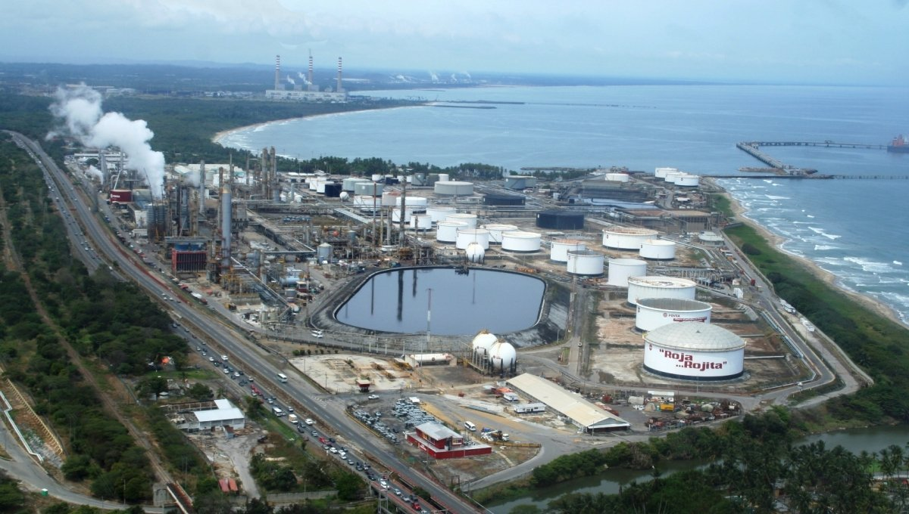
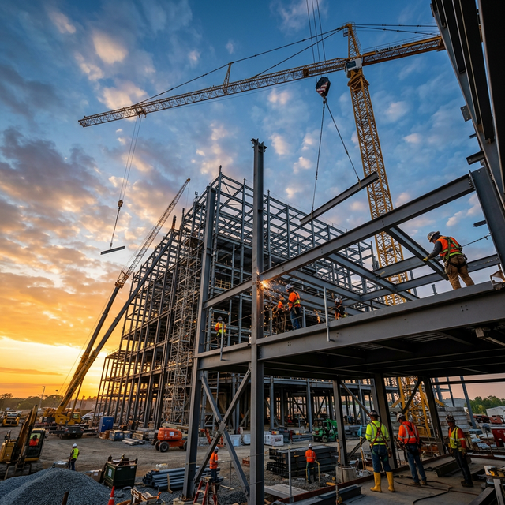

Infraestructura de Redes, Telecomunicaciones & Gemelos Digitales
Desarrollamos soluciones de conectividad crítica, ciberseguridad industrial OT/IT, automatización de procesos con IA y simulación 3D en tiempo real para refinerías, taladros y plantas energéticas.
Solidez Técnica & Respaldo Operativo en el Sector Energético
En kaironInnova integramos ingeniería de telecomunicaciones, ciberseguridad industrial y tecnología de gemelos digitales para optimizar las operaciones de hidrocarburos, refinación y manufactura pesada.
Nuestro equipo multidisciplinario combina experiencia directa en plantas, taladros y salas de control con las herramientas más avanzadas de orquestación IA y modelado tridimensional.
Seguridad Intrínseca en Campo
Instalaciones certificadas para atmósferas explosivas y áreas clasificadas.
Conectividad de Alta Disponibilidad
Arquitecturas redundantes en fibra óptica, microondas y redes Wi-Fi 6 industriales.
Ingeniería de Redes & Telecomunicaciones de Campo
Diseñamos, desplegamos y certificamos redes de misión crítica para refinerías, patios de tanques, taladros de perforación y plantas petroquímicas.
Fibra Óptica Dieléctrica & Cableado Cat6A
Enlaces troncales a 10 Gbps 100% dieléctricos sin metales ni riesgo de chispas, ideales para áreas clasificadas (Zona 0 / Clase I Div 1), junto a cableado Cat6A LSZH libre de halógenos.
WLAN Wi-Fi 6 Industrial & Radioenlaces
Cobertura inalámbrica de alta densidad para plantas y patios con roaming continuo (802.11k/v/r) y radioenlaces microondas punto a punto/multipunto para taladros y pozos remotos.
Core de Red & Ciberseguridad OT/IT (NGFW)
Switches gestionables L2+/L3 con PoE+, agregación LACP y segmentación estricta de redes de control (SCADA/DCS) bajo norma IEC 62443. Firewalls NGFW con inspección profunda y VPNs cifradas.
Data Center Local, Servidores & Respaldo
Gabinetes industriales NEMA 4X / IP66 ventilados, servidores en rack para virtualización local/híbrida (Dell PowerEdge / HPE) y sistemas UPS Online de Doble Conversión 24/7 sin caídas.
- Red WiFi 6 & Cat6A: Cobertura total sin zonas muertas y puestos directos 10 Gbps.
- Data Center Core: Rack de 42U con switch core L3, firewall NGFW y servidor Dell.
- Seguridad Intrínseca: Enlace 100% dieléctrico sin riesgo de chispas en combustible.
- Telemetría Industrial: Conexión en tiempo real para sensores SCADA, CCTV y despacho.
Gemelos Digitales para la Industria Petrolera
Explora y manipula las réplicas virtuales interactivas 3D de refinerías, separadores trifásicos P&ID, sistemas de almacenamiento y redes eléctricas.

Refinería El Palito
Simulación termodinámica, balance de masa en tuberías y control de nivel en tanques de almacenamiento.
Separador Trifásico P&ID
Separación de Agua, Crudo y Gas con modelado esquemático P&ID de transmisores de presión y nivel.

Puente & Vías Industriales
Monitor de salud estructural (SHM) con sensores de tensión en cables y vibración dinámica en tiempo real.

Almacén Logístico AMR
Gestión de repuestos críticos y materiales en almacenes industriales con robots móviles y WMS.
Red Eléctrica Smart Grid
Monitoreo de subestaciones, generación auxiliar y parques de distribución para balanceo dinámico de carga.
Simulación Holográfica 3D
Telemetría en Vivo
Osciloscopio de Señal
Ecosistema de Agentes Autónomos en Planta
Conectamos sensores industriales de campo y telemetría de red a flujos de trabajo inteligentes para monitoreo predictivo, alertas tempranas y control automatizado.
1. Ingesta de Evento IoT
Sensores industriales detectan fluctuaciones de presión, temperatura o vibración en torres y líneas de proceso.
Sensores / Modbus / SNMP2. Orquestación IA (n8n)
Agentes inteligentes evalúan patrones históricos en tiempo real con modelos predictivos de riesgo operativo.
Agente Autónomo3. Acción Preventiva
Ajuste automático en lazos de control y notificación inmediata al personal de guardia por WhatsApp y correo.
Mitigación 24/7Proceso de Ingeniería & Despliegue
Metodología estructurada de extremo a extremo: desde el diseño de la red física hasta la automatización con IA y gemelos 3D.
Auditoría & Diseño de Red
Levantamiento técnico en campo, estudio de radiofrecuencia (Site Survey RF) y diseño topológico de fibra óptica bajo norma TIA-568.
Despliegue & Conectividad OT/IT
Instalación de conmutación L2/L3 PoE+, Firewalls NGFW perimetrales, APs Wi-Fi 6 e integración de telemetría de campo.
Modelado 3D & Gemelo Digital
Reconstrucción tridimensional WebGL de plantas e infraestructuras sincronizada con telemetría de sensores en vivo.
Agentes IA & Soporte 24/7
Orquestación con agentes autónomos (n8n), modelos predictivos de anomalías y alertas automáticas 24/7.

Conectividad Ininterrumpida & Seguridad de Grado Industrial
Optimizamos la operación de tus instalaciones con estándares de ingeniería de clase mundial.
Solicitar Asesoría de IngenieríaImpulsa la Conectividad e Inteligencia de tu Empresa
Solicita una asesoría técnica, propuesta de diseño de red industrial o demostración de gemelos digitales para tus operaciones.